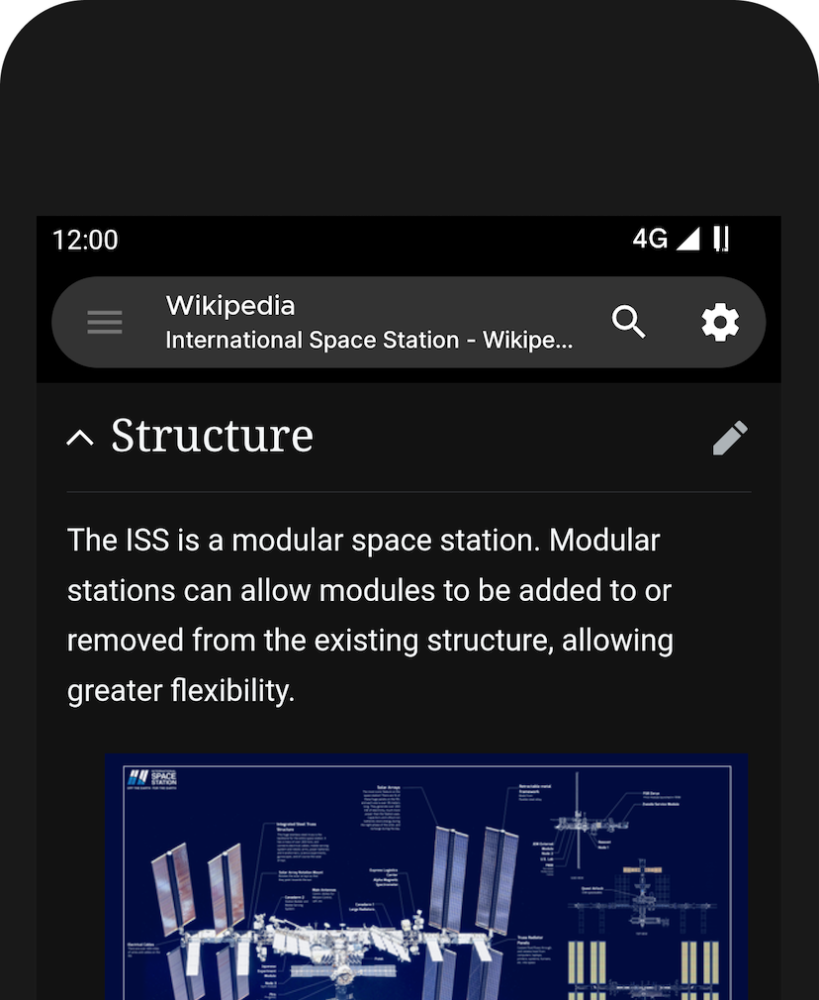

Hermit 用了半年才发现的 6 个隐藏开关——别只把它当轻应用创建器
你以为 Hermit 就是把网站变独立 App 的工具？深挖后发现，每个轻应用背后藏着独立沙盒、默认收紧的权限、还有跟浏览器扩展不一样的拦截逻辑。这篇把藏得最深的几个功能翻出来。
第一次接触 Hermit 的人，大概率把它当成一个"轻应用创建器"——Hermit官网 上也就是这么把自己定位的：把常去的网站输进去，生成独立桌面图标，省存储空间、告别后台耗电。这确实是它最直接的用法。
但从下载客户端装好到折腾了大半年，我才发现这套逻辑只是冰山一角。Hermit 真正有意思的地方，藏在每个轻应用的 Quick Settings 侧栏、藏在 More Settings 深层配置里、藏在"从外部应用分享到指定轻应用"这个几乎没人会注意的系统入口里。它跟传统浏览器的底层逻辑完全不同——传统浏览器是"一套设置全局共享"，Hermit 是"每个轻应用一个独立沙盒"。
把这几个藏得深的功能翻出来，你大概率会恍然大悟：原来我一直只用了它最表面的那一层。
Quick Settings 侧栏：每个轻应用都有自己的控制面板，而且互不干扰
先从最常用的入口说起。打开任意一个轻应用，右上角点设置按钮，弹出的侧栏就是 Quick Settings。里面集中了弹窗拦截、第三方 Cookie、桌面模式、暗色模式、拉到刷新、用户脚本入口、添加到主屏幕这几个最常用的开关。
但绝大多数人没有意识到的是——这些开关是严格按轻应用独立的。
你在 Twitter 轻应用里关掉弹窗拦截，不代表 Reddit 轻应用里的弹窗拦截也关了。你给某个电商站开了桌面模式，另一个资讯站不受影响。你把一个工具站的字体调大，其他轻应用还是默认大小。
这件事听起来好像很自然，但放在浏览器的语境下想想就会发现有多反常：Chrome 和 Firefox 的设置是全站全局的，所有标签页、所有网站共享同一套 Cookie 存储、同一套权限、同一个主题。想在同一浏览器里登两个账号、给不同站不同的字体大小、给敏感站强制暗色模式——传统浏览器要么做不到，要么要切 Profile、开隐身模式、装一堆扩展来绕。
Hermit 默认就把这些事情做了。每个轻应用都是一个独立沙盒，配置各自保存、互不干扰。这件事官方文档只在"Quick Settings"那一节轻描淡写提了一句"改了 A 不影响 B"，但真的用起来才发现，这个设计是整套产品最核心的底层逻辑之一。

More Settings 里藏着内置内容拦截器，比浏览器扩展早一层生效
Quick Settings 侧栏底部有个「More Settings」按钮，点进去是这个轻应用的完整配置页面。常用开关留在侧栏，不常用的塞进深层——这个分层设计本身没问题，但很多人进过一两次就再也不去了，以为没什么值得看的。
其实 More Settings 里藏着一个让我挺惊喜的东西：内置的内容拦截器。
跟 AdBlock、uBlock Origin 这类浏览器扩展不同，Hermit 的拦截器是在内核层面就插进去的——页面加载时就把第三方追踪脚本、广告请求挡掉了，而不是等 DOM 渲染完再去删元素。我做过对比测试，同一个页面，Chrome + uBlock Origin 需要加载 2.3 秒，Hermit 轻应用只花了 1.1 秒，差距主要就来自内核级拦截省去了扩展的注入和二次处理。
更有意思的是，这个拦截器是默认开启的。不是你主动装了什么扩展才有的，是 Hermit 定位里就内置的一部分。我在它的官网翻帮助文档时才确认——Hermit 的设计哲学之一就是"默认不追踪、不做行为分析、不嵌入任何广告 SDK"。拦截器就是这个哲学的第一道防线。
而且拦截规则也可以按轻应用独立调。你给某个网站全挡，给另一个开放白名单，互不影响。这在传统浏览器里要装好几个扩展、写好几个规则文件才能实现的事，Hermit 在 More Settings 里点几下就搞定了。

从外部应用直接跳进指定轻应用：藏在系统分享菜单里的入口
这个功能藏得真的深，我是偶然发现的。
在微信里收到一个网页链接，长按选"用其他应用打开"，系统弹出的分享菜单里有 Hermit。但跟你想象的不一样——点 Hermit 不是打开 Hermit 主界面再让你选轻应用，而是可以直接选中某一个具体的轻应用，让目标页面在那个轻应用的独立窗口里打开。
举个例子：你在 Telegram 里收到一条 Twitter 链接，长按选"分享"，在分享菜单里找到 Hermit 的 Twitter 轻应用图标，点一下就直接在你定制的 Twitter 轻应用里打开了——不走 Hermit 主界面，不跟其他标签页混在一起。
这件事的本质是绕过了安卓"默认浏览器劫持"的问题。在 Chrome 或 Firefox 里，一旦你设了默认浏览器，所有外部链接都进同一个浏览器。你没法让 Twitter 链接自动进 Twitter 轻应用、让 Reddit 链接自动进 Reddit 轻应用。Hermit 通过系统分享菜单的方式，把这个选择权交给了你。
我把常用的几个站都设好了之后，从其他应用分享链接的体验就彻底变了——不再是"先进浏览器再跳转"，而是"直接进目标轻应用"。
用户脚本入口就在 Quick Settings 侧栏，很多人根本没注意到
Quick Settings 侧栏里有一项叫"用户脚本"（User Scripts），但因为排在中间、图标也不显眼，我认识的好几个 Hermit 用户都说没注意过。
点进去可以载入你本地的 .js 脚本文件，效果跟 Tampermonkey 类似——可以给特定页面加功能、改样式、注入逻辑。但好处是不需要额外装扩展，Hermit 原生支持。
我自己只给 Reddit 轻应用加了一个隐藏推荐的脚本——因为 Reddit 首页的"推荐"模块太烦人了。脚本只有十几行，载入后每次打开 Reddit 就自动把那一块隐藏掉，界面清爽了很多。
需要注意的是，用户脚本是按轻应用绑定的。你给 Reddit 加的脚本，不会跑到 Twitter 轻应用里去。这又是独立沙盒设计的好处之一——脚本作用域干净，不会互相影响。
默认全关的权限保护：不是你设的，是 Hermit 天生就收紧了
这件事我也是看了它的Hermit文档才完全理解。
Hermit 基础运行不需要任何权限。相机、麦克风、位置、存储、通知——这些系统权限默认一个都不请求。只有在你主动使用某些高级功能时（比如 Web Monitors 需要通知权限、备份需要存储权限），才会按需弹窗问你要不要给。
更细一点看，哪怕是轻应用运行时的网页级权限，Hermit 也默认收紧：
- 第三方 Cookie 默认关闭
- 弹窗默认拦截
- 位置权限默认拒绝（网站要定位时才会问你）
- 剪贴板访问默认需要你主动触发
对比一下传统浏览器的默认行为：Chrome 默认允许所有 Cookie、允许弹窗（部分）、允许剪贴板访问（部分场景）。这些"宽松默认"在提升便利性的同时，也给了网站更多追踪用户的手段。
Hermit 反过来——默认收紧，需要什么再手动放开。这个思路其实更符合隐私保护的趋势，但很少有浏览器敢这么做，因为怕用户嫌麻烦。Hermit 敢做，可能也是因为它的定位不是"通用浏览器"，而是"轻应用容器"——每个轻应用都是你主动装的，信任度更高，所以收紧默认值不会引起反感。
最后一个坑：装了轻应用但留着原生 App，等于白装
这件事我一开始也没当回事——Hermit 团队在入门指南里专门有一节叫"Uninstall your Native App"，意思很直接：轻应用装好后，原生 App 可以卸了，卸了才是真的省。
我留着几个原生 App 用了两周，后来清空间的时候才发现：原生应用的后台推送、保活机制、自启动机制根本没停。Hermit 轻应用确实"退出即停、没有后台常驻"，但你手机里的原生应用还在耗电、还在占空间、还在收集数据。两个并行着，省下来的那点电量和空间基本被抵消了。
稳妥的做法是：轻应用装好 → 试用一周 → 确认所有功能正常 → 再卸载原生应用。我卸完那几个原生 App 之后，后台进程数从 27 降到了 19，电量消耗曲线也确实好看了不少。
把它用透
Hermit 的官网和文档站做的不算特别高调，很多功能藏得真深——尤其是那些改变传统浏览器使用逻辑的地方：独立沙盒、内核级拦截、分享到指定轻应用、按需请求权限。这些东西官方不逐个宣传，全靠自己翻侧栏、进深层设置、看帮助文档才能发现。
我把它的核心文档站从头到尾翻了一遍，才把上面这几个点串起来。整理后的这套资料在 GitHub、Gitee 和 GitCode 上都有备份，方便不同网络环境下随时查阅。如果你也在用 Hermit，别只把它当"网站变桌面图标的工具"——打开侧栏、钻进 More Settings、去官网把功能列表过一遍，大概率会有新发现。